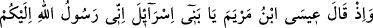
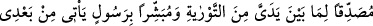
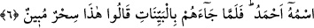

da onların kalplerini ibâdeti irâde etmekten saptırdı.
Fakîr (Bursevî) derim ki: Onlar Mûsâ (a.s.)’ın risâlet ve nübüvvetini kabul etmekten
sapınca, Allah da onların kalplerini ona dost olmaktan ve onunla beraber olmaktan
saptırdı. Bu sebeple onlar Mûsâ (a.s.)’ı Peygamber olarak değil de Mûsâ olarak
gördüler. Bu sebeple de Cenab-ı Hakk’ı görmekten mahrum edildiler.
“Allah, fâsıklar topluluğunu doğru yola iletmez.” Allah, kendisine itâat etmekten ve
hak yoldan çıkan ve azgınlıkta direten kimseleri, arzu edilen hedefe ulaştıran hidâyete
erdirmez. Bu kaide geneldir. Ancak, Mûsâ (a.s.)’a karşı gelenler öncelikle bu hükme
girerler. Cenab-ı Hakk’ın onları fâsıklıkla nitelendirmesi şu âyet-i kerîmeleri
gereğincedir: “Mûsâ: Rabbim! Ben kendimden ve kardeşimden başkasına hakim
olamıyorum; bizimle, bu yoldan çıkmış toplumun arasını ayır, dedi.” ve “.... Artık
sen, yoldan çıkmış toplum için üzülme, dedi.” (el-Mâide, 5/25-26).
İmâm Fahreddin Râzî şöyle der: Bu âyet-i kerîme, Peygambere (s.a.) yapılan
eziyetin, küfrü gerektirecek ve kalplerin hidâyetten sapmasına sebep olacak kadar
büyük günah olduğunu göstermektedir. İyiliği emreden ve kötülükten meneden âlimlere
yapılan eziyet de büyüklükte onun peşinden gelir. Çünkü âlimler peygamberlerin
vârisleridir. Onlara eziyet etmek peygamberlere eziyet hükmündedir. Peygamberler ve
velîler basiretle Allah’a dâvet ettikleri gibi, kalp elçileri de beşerî ve tabiî güçleri
nisbetinde, beşerî sıfatlardan yüce rûhî ahlâka, yaratılış karanlığından Hak aydınlığına
çağırırlar. O halde, zatî kabiliyet yoksunluğu nedeniyle Hak’tan ve bu dâveti kabul
etmekten yüz çeviren, dünyaya yönelerek, sapıtmıştır. Bu durumda olan kimse Cenab-ı
Hakk’a nereden hidâyet ve yol bulacak?
6. Hatırla ki, Meryem oğlu İsâ: Ey İsrailoğulları! Ben size Allah’ın elçisiyim,
benden önce gelen Tevrat’ı doğrulayıcı ve benden sonra gelecek Ahmed adında bir
peygamberi de müjdeleyici olarak geldim, demişti. Fakat o, kendilerine açık deliller
getirince: Bu apaçık bir büyüdür, dediler.
“Hatırla ki, Meryem oğlu İsâ: Ey İsrailoğulları! Ben size Allah’ın elçisiyim dedi.”
İsâ (a.s.)’ın onlara böyle hitâb etmesi, kendisinin peygamber olduğunu tasdik etmeleri
yönünde kalplerini yöneltmek içindir.
“Benden önce gelen Tevrat’ı doğrulayıcı ve benden sonra gelecek Ahmed adında
bir Peygamberi de müjdeleyici olarak geldim, demişti.” İsâ (a.s.)’ın Tevrat’ı tasdik
etmesi, İsrailoğullarının onu tasdik etmeleri için en kuvvetli gerekçelerinden biridir.